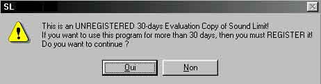

http://members.xoom.com/easternd
Présentation :
Sound Limit est surement au des meilleurs outils pour compacter des wav en mp3 et vice versa. Son exellent moteur permet d'avoir une rapidité de compression record et de pouvoir compresser/décompresser des fichiers audio comme un rien avec une tonne d'options.
Je vais vous présenter ici la version 2.51, pour les versions precedentes on fait les cracks de la même façon :)
Bon alors on demarre le prog (sisi, puisque je vous dis que ca aide) et on regarde ce qui se passe. Déja on est mal acceuilli avec une MessageBox qui nous signale tout le temps que c'est une version Demo :

Alors on fais Oui, on utilise SL et on remarque qu'aucain endroit n'est fait pour s'enregistrer, on à donc affaire à une vraie Demo, il va falloir pensser à virer tout ca...
On va maintenant passer à une analyse plus profonde, pour cela il nous faut quelques outils de base :
C'est tout :)
Analyse :
Ok, on fait une copie du fixhier SL.exe et on la désassemble avec WinDasm. Ok, le fichier n'est pas protégé contre le désassemblage, c'est une bonne chose. Maintenant on cherche l'occurence "This is an" dans le module de recherche. Là on tombe sur le même message que celui qui se trouve dans le nag, on relance la recherche, ok, c'est bon on ne trouve cette phrase qu'une fois dans le listing, c'est donc notre cible :)
L'endroit interressant est celui-ci :
* Referenced by a (U)nconditional or (C)onditional Jump at Address: |:00410351(C) | :0041035D 8B8FA4760100 mov ecx, dword ptr [edi+000176A4] :00410363 B800010000 mov eax, 00000100 :00410368 3BC8 cmp ecx, eax :0041036A 7E15 jle 00410381 :0041036C 8987A4760100 mov dword ptr [edi+000176A4], eax :00410372 EB0D jmp 00410381 * Referenced by a (U)nconditional or (C)onditional Jump at Address: |:0041031E(C) | * Possible Reference to String Resource ID=00128: "Cannot execute Virtual CD Player, VCDP.EXE can't be found! M" | :00410374 C787A476010080000000 mov dword ptr [edi+000176A4], 00000080 :0041037E 83CBFF or ebx, FFFFFFFF * Referenced by a (U)nconditional or (C)onditional Jump at Addresses: |:0041036A(C), :00410372(U) | :00410381 53 push ebx << Ca risque de gêner :00410382 6A34 push 00000034 << C'est beau ca * Possible Reference to String Resource ID=00110: " This is an UNREGISTERED 30-days Evaluation Copy of Sound Lim" | :00410384 6A6E push 0000006E :00410386 E89B9E0200 call 0043A226 :0041038B 83F807 cmp eax, 00000007 :0041038E 7462 je 004103F2 :00410390 8BCF mov ecx, edi << Bel atterrissage :00410392 E879060000 call 00410A10 :00410397 85C0 test eax, eax :00410399 7457 je 004103F2 :0041039B 8D54242C lea edx, dword ptr [esp+2C] :0041039F 52 push edx :004103A0 8D44242C lea eax, dword ptr [esp+2C] :004103A4 50 push eax :004103A5 8D4C242C lea ecx, dword ptr [esp+2C] :004103A9 51 push ecx :004103AA BE6C674400 mov esi, 0044676C
* Possible StringData Ref from Data Obj ->"COMCTL32.DLL" | :004103AF 689C4A4500 push 00454A9C :004103B4 8D4C2430 lea ecx, dword ptr [esp+30] :004103B8 896C2434 mov dword ptr [>esp+34], ebp :004103BC 896C2438 mov dword ptr [esp+38], ebp :004103C0 896C243C mov dword ptr [esp+3C], ebp :004103C4 89742430 mov dword ptr [esp+30], esi :004103C8 E89377FFFF call 00407B60 :004103CD 89442430 mov dword ptr [esp+30], eax :004103D1 837C242404 cmp dword ptr [esp+24], 00000004 :004103D6 C644243C03 mov [esp+3C], 03 :004103DB 733A jnb 00410417 :004103DD 837C242847 cmp dword ptr [esp+28], 00000047 :004103E2 7333 jnb 00410417 :004103E4 53 push ebx << En fait c'est ici que ca risque de planter :004103E5 6A10 push 00000010
Voilà, c'est tout, alors vous l'aurez bien compris, on ne peut pas modifier de saut inconditionnel puisqu'il n'y en à pas! Peu importe, on va se le fabriquer ce saut, héhé :)
Je vous explique, dans le listing on voit un push ebx et un beau push 00000034 qui se suivent. Ils servent d'instruction à la procédure de lancement du nag en poussant son contenu dans la pile (voir le tut pour Picaview) et si l'on saute par dessus, ces deux push ne serviront plus à rien! En bref, on va litteralement "éffacer" ce passage du programme :)
Pour se faire, il faut utiliser Hiew et ouvrir votre fixhier SL.exe. Faites trois fois Entrée pour avoir le code en assembleur et lancez une recherche héxadécimale sur E89B9E0200 qui correspond au call 0043A226 qui se trouve en plein dans la zone cible. Placez vous un peu plus haut sur le fameux 6A34 push 00000034 et modifier-le en faisant F3 puis F2 enfin, dans la cellule de texte tapez "jmps F790" pour indiquer que l'on va sauter sur 8BCF mov ecx, edi puisque F790 est sont n° de ligne, et enfin faites F9 pour enregistrer et quittez Hiew :)
Pourquoi 8BCF mov ecx, edi ? Car c'est une des instructions type pour "l'atterrissage" de sauts quelconques. Il se trouve aussi juste en dessous du 7462 je 004103F2, en effet ce saut va sauter par dessus la verification de la version du fichier COMCTL32.DLL on va donc laisser ce passage tranquil :)
Bref, une fois le push push 00000034 modifié en jmps F790 (saut inconditionnel) on peut démarrer le prog. Arf! Ca marche pas, mais pourquoi? Regardez le push ebx se trouvant à la ligne 00410381 et 004103E4, vous ne remarquez rien? En fait si sa plante c'est à cause du premier push car si il reste, le deuxieme pusch ebx va s'accumuler par dessus sans avoir été vidé auparavant, donc incohérence pour l'ordinateur, donc plantage (cqfd, arf!). Il faut supprimer le push ebx se trouvant juste au dessus du call 0043A226. Pour ca rien de plus simple, on redemarre Hiew, on recherche avec F7 le call 0043A226 ayant pour adresse héxa E89B9E0200, on chope le push ebx se trouvant trois lignes plus haut, on fait F3 puis F2 et on remplace push ebx par nop (Not oppérande), on enregistre, on quitte Hiew et enfin on démarre SL.
Et là miracle, ca marche! En effet, on à completement tuer l'instruction le prog n'y fait plus attendtion et saute par dessus grace au saut inconditionnel qui quoi qu'il arrive passe par dessus le nag =)
Bon, là il reste un petit probleme à resoudre, pas flagrant mais gênant. En effet, si vous manipulez un peu trop l'horloge du pc, SL va vous afficher "Inccorect Date/Time!", etc.... Pour le faire sauter, classique, on va chercher dans Hiew le call 00410EE0, soit E84E390200 en héxa, on chope le saut conditionnel jge 00410D49, 7D54 en héxa, et on remplace jge par jmps, on enregistre, on quitte, et hop! Ca fonctionne :)
Voilà c'est tout, Souund Limit est maintenant completement cracké! Vous voyez, c'est pas très sorcier. Avec cette méthode on peut déplomber pas mal de démos qui en faite sont souvent des programmes complets bridés ;)
Le mot de la fin : Sound Limit c'est trop puisssant!